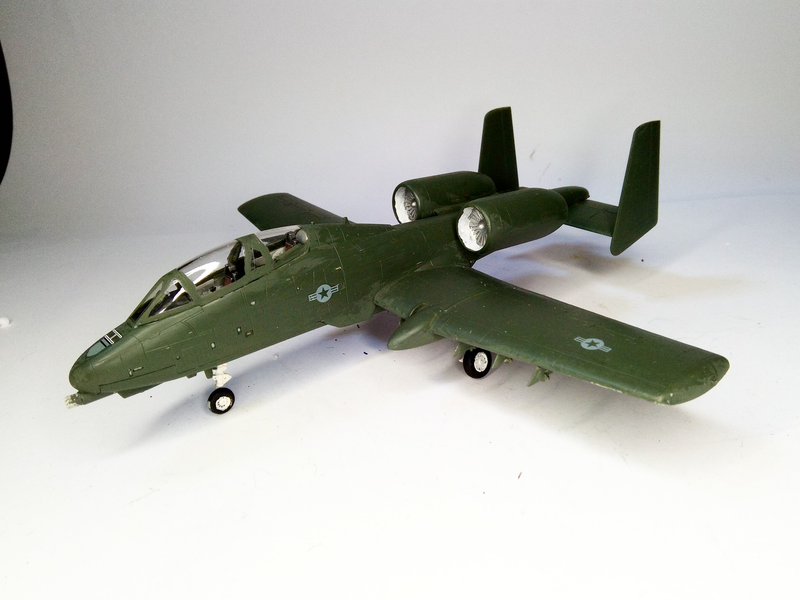
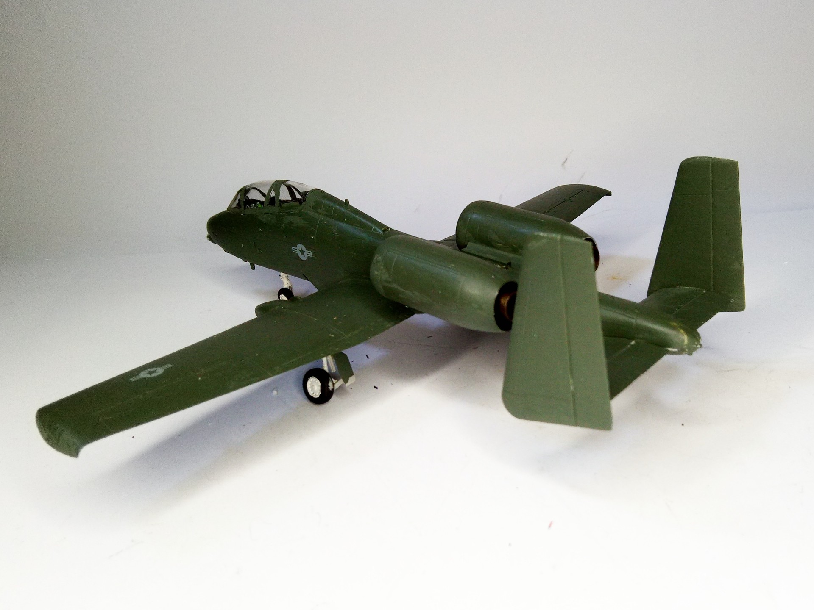

Aerei · scale model archive
Fairchild A10 Twin Seat
Fairchild A10 Twin Seat — Scale: 1/72 #A10. Kit Rare bird, only one built, see more at…

Photo gallery

English description
Kit
Rare bird, only one built, see more at
https://theaviationgeekclub.com/the-story-of-the-ya-10b-formerly-night-adverse-weather-a-10-the-only-the-only-two-seat-warthog-ever-built/
#1/72
Descrizione italiana
Uccello raro: ne fu costruito uno solo. Maggiori informazioni: https://theaviationgeekclub.com/the-story-of-the-ya-10b-formerly-night-adverse-weather-a-10-the-only-the-only-two-seat-warthog-ever-built/